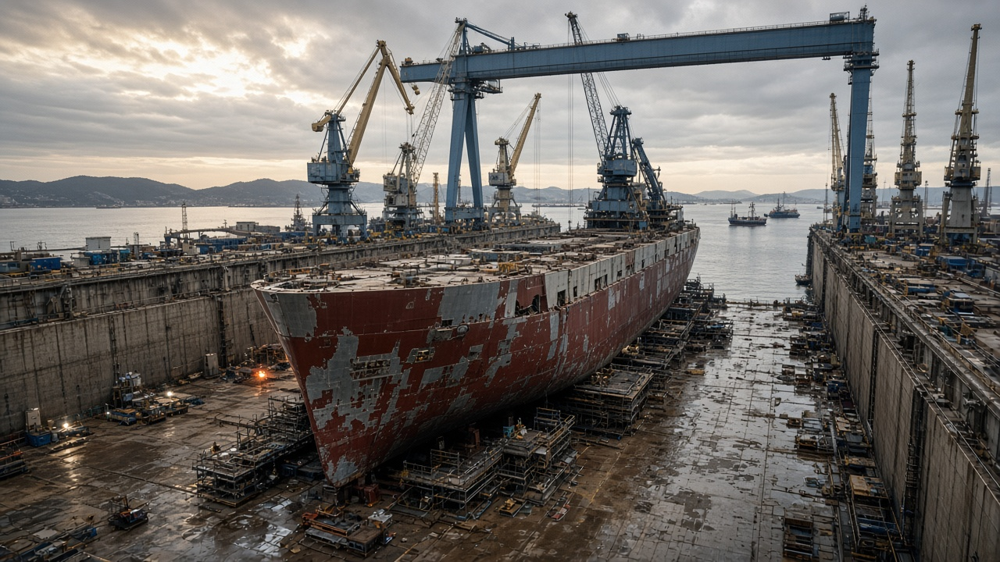
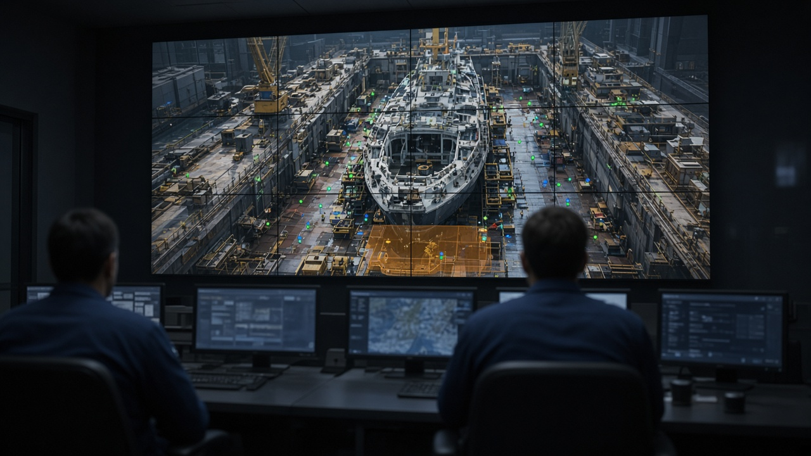
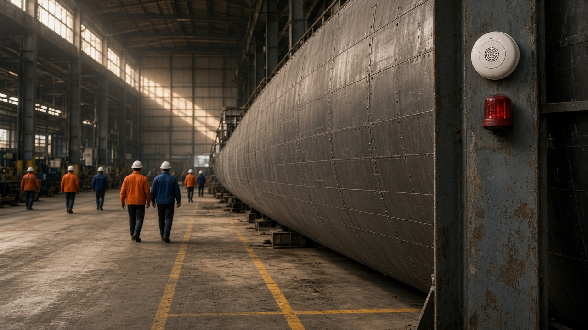

定位怎么接
室外开阔区域采用北斗或 GNSS；车间、船坞和甲板优先 UWB 或蓝牙。钢结构舱内信号容易被遮挡，层间能否分清必须在现场实测，不能只看宣传指标。

火灾报警系统保持独立运行。本平台只接收告警状态，不对消防设备下发控制指令。
室外用北斗或 GNSS，厂区与车间用 UWB 或蓝牙。创界做软件与三维界面，硬件与安装由专业厂商完成。
从一个船位或高风险区域开始，先验证层间区分、位置是否过期、报警后能否列出危险区人员。
产品
船厂真正难的不是再买一套漂亮的大屏，而是报警之后找不到人，也不知道谁还在危险区域。下面两张图是方案效果示意，用于说明指挥中心和现场该如何配合，不是已上线的现场录像。

指挥中心效果示意：大屏呈现船坞三维态势、人员位置与危险区域。图中数据为模拟。
在船厂与船体的三维视图里看到每个人所在的船坞、甲板和舱层，而不只是一张平面点位图。

车间与船体分段现场示意：报警来自现场已有探测器，平台负责把信号和人员位置放到一起。
接入火灾、烟雾、气体等已有报警信号。报警发生时，自动圈出影响区域，并对照人员位置给出附近名单。
方案
市场里已有人员定位和消防厂商。创界做的是把定位、现有报警和船厂指挥流程做成一套能用的界面，并在试点现场验收。
室外开阔区域采用北斗或 GNSS；车间、船坞和甲板优先 UWB 或蓝牙。钢结构舱内信号容易被遮挡，层间能否分清必须在现场实测，不能只看宣传指标。
通过消防或报警厂商提供的接口、网关接入告警状态。原有火灾自动报警系统继续独立工作，本平台不替代、不改建其控制回路。
创界负责软件、三维界面和报警后找人的业务流程。定位基站、标签与现场安装由专业硬件厂商实施，船厂提供试点区域与管理配合。
落地
不建议一上来就铺全厂。先选一个能看清效果、也能验清问题的范围，走完报警后找人的完整流程，再决定下一步。
选定一个船位、船坞或高风险作业区，明确要看的甲板与舱层范围。
安装或接入定位，接通现有报警信号，在真实钢结构和多层空间里测精度与延时。
与指挥中心一起做一次模拟报警：谁在危险区、如何通知、如何人工确认撤离。
试点达标后再扩展到更多船位或全厂，避免尚未验清就全面铺开。
合作
创界可与船厂、系统集成商一起做小范围试点：创界出软件与界面，定位和消防硬件仍走专业厂商，现场管理由船厂主导。
本站用于方案展示。场景图为效果示意，人员位置与报警数据均为模拟，不代表已经在某家船厂上线运行的现场系统。
项目承担
创界（南通）智能科技有限公司
CHUANGJIE